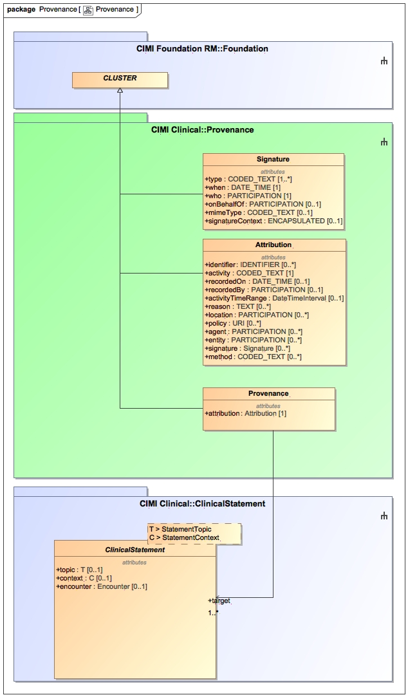

The Provenance package introduces the Attribution class used to capture metadata about a specific activity such as the metadata surrounding the authoring of a clinical statement. It also introduces the Provenance class which allows the capture of attribution information external of the clinical statement target. The Provenance pattern is preferred over the Attribution pattern when one wishes to append provenance information without impacting the version of a clinical statement. Note that modifying a clinical statement's attribute of type Attribution will increment the clinical statement's version.
